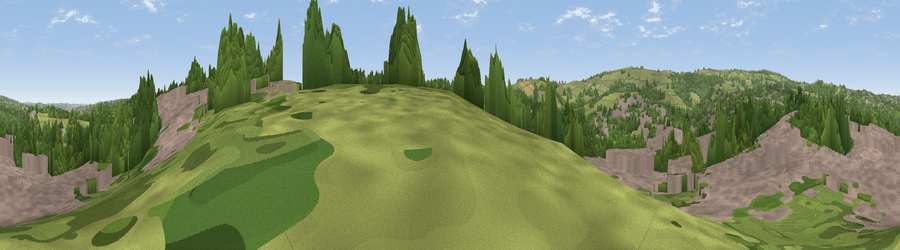

Viewpoint near Holmesfield
#35452 in England · top 71% of its area beats it · near HolmesfieldWhere it is
The exact computed spot (SK 32325 80125). Click the marker for map links.
The view, rendered

A 360° render of this exact spot computed from the terrain model, tree cover and land cover — summer colours, afternoon light, calibrated against photographs of famous viewpoints. Real trees, hedges and buildings will differ in detail.
The panorama
Grey silhouette: terrain skyline in each direction (720 bearings, Earth curvature and refraction included). Dashed green: skyline with trees (+15 m) and buildings (+8 m) as obstacles. Blue strip: how far the ground is visible on each bearing.
Where the view opens
Wedge length = distance to the farthest visible ground on that bearing (vegetation-aware). Rings at 10, 25 and 50 km.
What fills the view
41% woodland · 39% built-up · 18% grassland · 2% cropland
Angular shares of the visible panorama (visual magnitude), not map area. Landscape diversity 0.48 (0–1 Shannon).
Key numbers
More beautiful places nearby
The staircase of upgrades: each row has a higher view potential than everything closer. Driving times are estimates from straight-line distance, calibrated against real road routing — check an actual route before setting out.
| Place | Direction | Drive | Score |
|---|---|---|---|
| Viewpoint near Holmesfield | S · 2 km | ~6 min | 51.6 |
| Viewpoint near Holmesfield | SW · 3 km | ~7 min | 52.1 |
| Viewpoint near Holmesfield | WSW · 4 km | ~8 min | 69.4 |
| Viewpoint near Hathersage | WNW · 8 km | ~16 min | 70.9 |
| High Rake | WSW · 13 km | ~24 min | 71.1 |
| Viewpoint near Oughtibridge | N · 14 km | ~25 min | 72.5 |
| Viewpoint near Thornhill | NW · 15 km | ~27 min | 74.1 |
| Viewpoint near Wharncliffe Side | N · 16 km | ~29 min | 75.2 |
53.31707, -1.51624 · source: screening · position refined by local search. Computed location — check access rights before visiting.